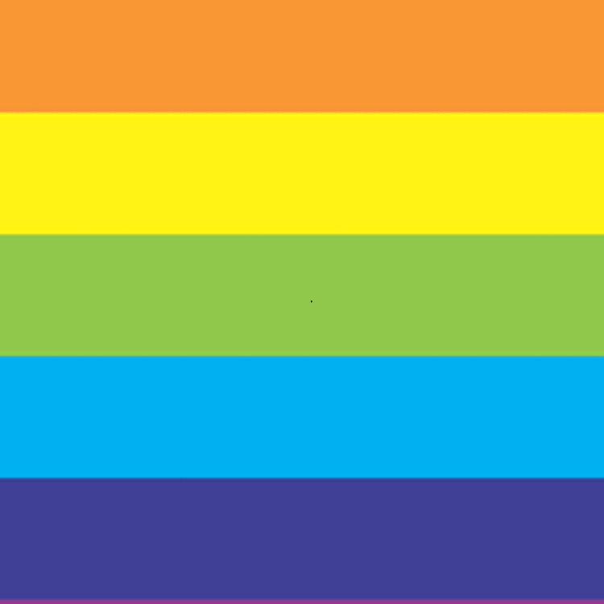

Susan Kare
Motion Graphic (2017)
Many of the interface elements and typefaces for Apple Macintosh in the 1960’s were created by the graphic designer, Susan Kare. To show tribute to her great work, I chose to develop a compelling GIF that relates to her work.

